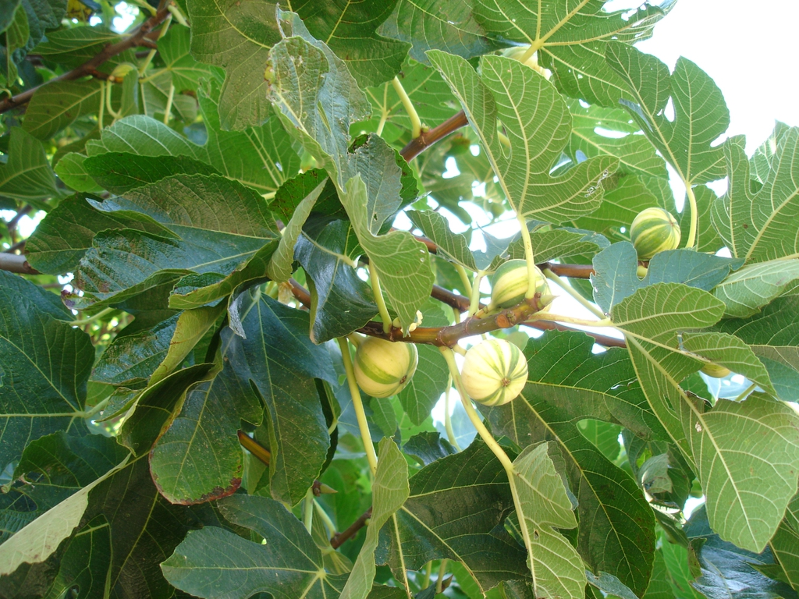

Overview
Botanical Name: Ficus carica
Family: Moraceae
Other Names
- Sanskrit: Anjira, Kakodumbar, Manjula, Phalgu, Rajodumbara, Udumvara
- Hindi: Anjir, Tin
- English: Common fig
- Urdu: Anjeer, Balas, Anjir, Anjeer (khushk dashti), Anjra(khushk dashti), Poast darakht anjir, Anjir zard
- Kannada: Anjura, Anjuri, Shime-atti, Simeyatti, Anjoora, Seeme atthi, Shimeatti, Simeatti, Anjeera
- Malayalam: Shima-atti, Simayatti, Shimayatti
- Marathi: Anjir, Anjeer
- Oriya: Udumbara
- Tamil: Simaiyatti, Tenatti, Shimai-atti, Ten-atti, Cimai atti, Ten atti, Anjura, Shimeatti, Seemai aththi, Simie attie pullum, Cimaiyatti
- Telugu: Anjuru, Manjimedi, Medi, Modipatu, Shima-atti, Simayatti, Tene-atti, Teneyatti, Manchi medi, Anjooramu
Distribution
This species is native to Carica in Asia Minor, globally distributed in tropical and subtropical countries. It is now cultivated chiefly in the Mediterranean region, from Turkey in the east to Spain and Portugal in the west; it is also grown commercially in parts of the USA and Chile and, to a small extent, in Arabia, Persia, India, China, and Japan. Within India, it is said to be cultivated near Poona and Bellary and Anantapur districts (S. India). In Punjab, Uttar Pradesh, and Mysore, it is mostly grown scattered in gardens or in homeyards.
Part(s) Used
Dose
Chemical Constituents
Ayurvedic Properties
- Guna (Quality): Guru, Snigdh
- Rasa (Taste): Madhur
- Vipaka (Metabolism): Madhur
- Virya (Potency): Sheet
- Prabhav (Impact): Mriduvirechan
Therapeutic Uses
- Anti-pyretic
- Strength and vigour
- Purgative
- Skin disorders
Formulations (Yog)